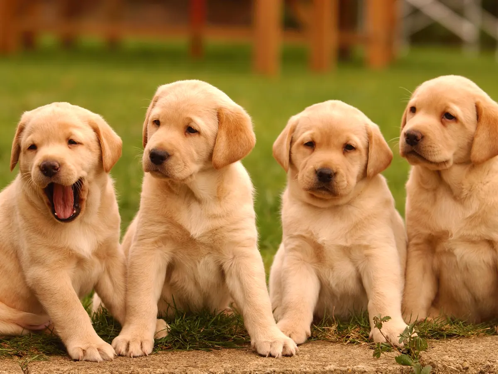

SAVE THEM ALL

Best Friends has been at the forefront of the no-kill movement, advocating for and implementing strategies to save the lives of animals. They collaborate with local shelters, rescue groups, and communities to establish no-kill programs and initiatives, aiming to achieve a 90% or higher save rate for all animals.
Best Friends actively engages in advocacy and policy initiatives to promote animal welfare. They work with lawmakers and stakeholders to support legislation that improves animal protection laws, prevents animal cruelty, and promotes responsible pet ownership. They also work to end breed-discriminatory legislation and promote community-based solutions to animal welfare challenges.
Best Friends believes in the power of community engagement and education. They offer various community programs to help pet owners, such as low-cost spay/neuter services, vaccination clinics, and pet food banks. They also provide resources, educational materials, and workshops to promote responsible pet ownership and address common challenges faced by pet owners.